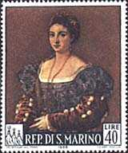
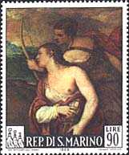
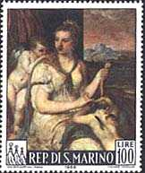

|
|
|


Titian (c. 1477-1576) was the greatest
16th-century Venetian painter and the shaper of the Venetian colouristic and
painterly tradition. He is one of the key figures in the history of Western
art.
Titian, whose full name in Italian is Tiziano Vecellio, was
born in Pieve di Cadore, north of Venice, by his own account in 1477; many
modern scholars prefer to advance the date to about 1487. In Venice, he
studied with Gentile Bellini and then with Giovanni Bellini, but only the
latter left a lasting imprint on his style.
Tip: please point
on the images with the mouse for more
information.
 |
 |
 |
 |
|
In his early works, Titian progressively enriched Giorgione's idyllic style. Bodies and fabrics took on an increasingly sensuous density and splendor, landscape settings became more resonant, colours deep and intense but harmonious�as in The Three Ages of Man (c. 1513, National Gallery of Scotland, Edinburgh) and Sacred and Profane Love (c. 1515, Galleria Borghese, Rome). The progression culminated in three bacchanals that Titian painted for a room in Duke Alfonso d'Este's palace in Ferrara between 1518 and 1522 (Worship of Venus and Bacchanal of the Andrians, both now in the Prado, Madrid; and Bacchus and Ariadne, now in the National Gallery, London). |
 |
After 1550, when Titian had returned to Venice, his style again changed. In a series of superb mythological paintings for Philip II of Spain, beginning with the Dana� (c. 1553, Prado) and including the Rape of Europa (c. 1559-1562, Isabella Stewart Gardner Museum, Boston), forms gradually lose their solidity, partially dissolving into hazy paint textures and vibrant brushstrokes, while color becomes more intense, so that a universe seems to be on the verge of disintegrating into flame.
Story: In Ovid's Metamorphoses the story is told of Diana, goddess of hunting, who punished Actaeon for having seen her bathing naked, by transforming him into a stag, so that he was devoured by his own hounds.
| Created: 2/22/00. Revised: 03/18/01. Copyright � 2000 - 2001 by Victor Manta, Switzerland. All rights reserved in all countries. |
|
|